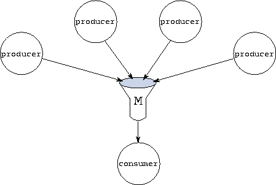

![[DBPP]](pictures//asm_color_tiny.gif)


![[Search]](pictures//search_motif.gif)
In the preceding section, we saw how channels are used to implement regular communication structures such as a ring and a tree. Next, we examine the techniques used to implement unstructured communication algorithms in which the identity of communication partners changes during program execution (Section 2.3.3). These patterns require many-to-one and many-to-many communication structures, which can be implemented using FM's MERGER construct. They can also require the dynamic creation of channels during program execution.
FM's MERGER statement creates a first-in/first-out message queue, just as CHANNEL does. Unlike CHANNEL, however, it allows multiple outports to reference this queue and hence defines a many-to-one communication structure. Messages sent on any outport are appended to the queue, with the order of messages sent on each outport being preserved and any message sent on an outport eventually appearing in the queue. The MERGER statement has the general form MERGER(in= inport, out= outport_specifier )
where an outport_specifier can be a single outport, a comma-separated list of outport_specifiers, or an array section from an outport array. The statement creates a new merger and associates the named inport and outports with this merger. The inport and the outports must be of the same type. Optional iostat= and err= specifiers can be used to detect error conditions, as in the CHANNEL statement.

Figure 6.3: A many-to-one communication structure connecting four
producer processes to a single consumer.
The following code fragment implements a typical many-to-one communication structure. As illustrated in Figure 6.3, this uses a merger to connect four producer processes with a single consumer.
INPORT (integer) pi ! Single inportOUTPORT(integer) pos(4) ! Four outports
MERGER(in=pi,out=pos(:)) ! Merger
PROCESSES !
call consumer(pi) ! Single consumer
PROCESSDO i=1,4 !
PROCESSCALL producer(pos(i)) ! Four producers
ENDPROCESSDO !
ENDPROCESSES !
 . Manager/Worker:
. Manager/Worker:
As an additional example of many-to-one communication, we consider the manager/worker structure used in the parameter study problem described in Section 1.4.4. As illustrated in Figure 1.14, this structure comprises one manager task, one output task, and multiple workers. The FM implementation (Programs 6.4 and 6.5) comprises a main program and two process definitions. The output process definition is not shown.
The main program (Program 6.4) creates two mergers to implement the many-to-one communication structures connecting the workers to the manager and output tasks. It also creates NW channels to connect the manager to each worker.
Each worker (Program 6.5) repeatedly requests a task descriptor from the manager, waits to receive this task descriptor, and executes the task represented by the descriptor. A worker terminates when the channel from the manager is closed. The manager repeatedly receives and replies to requests for task descriptors until no more tasks remain. A request comprises the identifier of the requesting worker, an integer in the range 1..NW. The manager responds to the request by sending a new task descriptor (generated by the function newtask, and represented by a real number) on the appropriate channel. When all task descriptors have been allocated, the manager signals termination by closing the channels to the workers.
Figure 6.4: A many-to-many communication structure connecting four
producer processes to three consumers. Each producer has an array of
three outports, and each consumer has a single inport. Three mergers
connect the outports with the inports.
A many-to-many communication structure allows multiple senders to communicate with multiple receivers. This structure is just a generalization of the many-to-one structure and can be implemented in a similar fashion, by using multiple mergers. The following code fragment implements a typical many-to-many structure. As illustrated in Figure 6.4, this code uses three mergers to connect four producer processes with three consumers. Each producer has an array of three outports; messages sent on outport i are routed to consumer i . Each consumer has a single inport.
aaaaaaaaaaaaaaaaaaaaaaaaaaaaaaaaaaaaaaaaaaaaaa¯ \ OUTPORT(integer) pos(3,4) !outports
INPORT (integer) pis(4) ! 3 inports
do i=1,3 ! 3 mergers
MERGER(in=pis(i),out=pos(i,:)) !
enddo !
PROCESSES !
PROCESSDO i=1,4 !
PROCESSCALL producer(pos(1,i)) ! 4 producers
ENDPROCESSDO !
PROCESSDO i=1,3 !
PROCESSCALL consumers(pis(i)) ! 3 consumers
ENDPROCESSDO !
ENDPROCESSES !
Port variables can be incorporated in messages, hence transferring the ability to send or receive on a channel from one process to another. A port that is to be used to communicate port values must have an appropriate type. For example, the following declaration specifies that inport pi will be used to receive integer outports.
INPORT (OUTPORT (integer)) pi
A receive statement applied to this port must specify as an argument an integer outport variable into which the incoming port is to be placed. For example, the following code fragment first declares an integer outport variable qo and then receives an outport of the same type into that variable.
aaaaaaaaaaaaaaaaaaaaaaaaaaaaaaaaaaaaaaaaaaaaaa¯ \ INPORT (OUTPORT (integer)) pi ! InportOUTPORT (integer) qo ! Outport
RECEIVE(pi) qo ! Receive outport
Figure 6.5: Dynamic channel creation in the bridge construction problem.
In (a), the bridge process creates a new channel. In (b), the
new channel's outport is communicated to the foundry process.
In (c), the new channel is used to return a datum ( girder) to
bridge. In (d), the communication is
complete.
Program 6.6 illustrates the transfer of ports in messages. This program implements a variant of the bridge construction program (Program 6.1) in which the bridge process makes explicit requests for data from the foundry process. Recall that in the original program, a stream of girders was communicated on a channel connecting foundry to bridge. In Program 6.6, things are reversed. A stream of requests is communicated on a channel connecting bridge to foundry. Each request comprises an outport that foundry uses to return a single data value to bridge. Hence, when bridge requires data, it creates a new channel, sends the outport to foundry, and waits for a reply on the inport (Figure 6.5). This implements a synchronous communication protocol: the producer ( foundry) produces data at the rate specified by the consumer ( bridge) and hence cannot ``run ahead'' of the consumer.
In this example, it would perhaps be simpler to specify the desired behavior by using static ``request'' and ``data'' channels. With this structure, the producer sends a datum on the data channel each time it receives a request on the request channel. However, dynamic channels can be useful in more complex communication structures where a request must be routed through several intermediate steps before being serviced.
© Copyright 1995 by Ian Foster